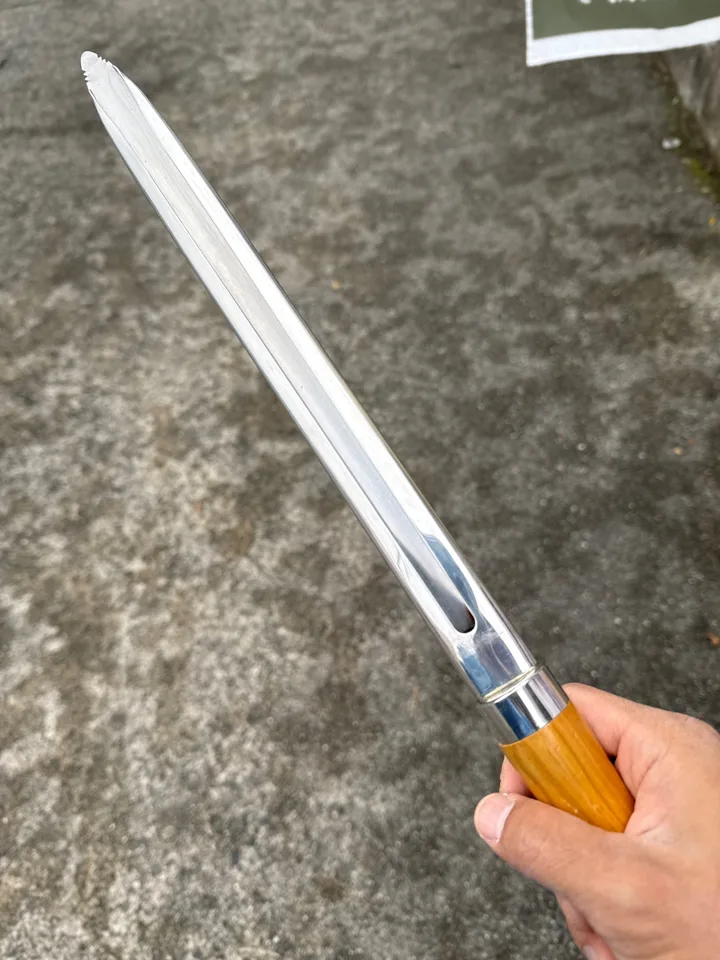
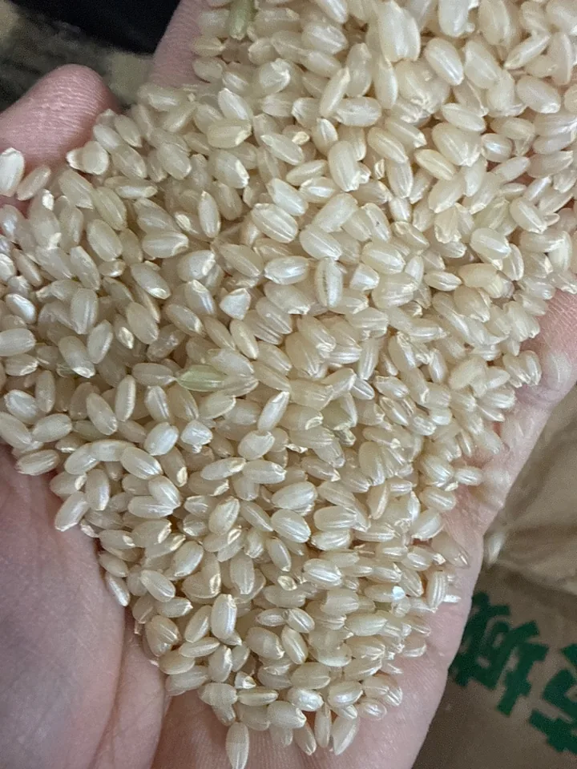

農産物検査
ぬく

🍚
ふくろを タップ
お疲れ様です 🌾
🏠 サイトへ もどる
🍚
お疲れ様です 🌾
🏠 サイトへ もどる農産物検査の仕事が題材です。手順は、穀刺しで袋から試料をぬき（1袋 約40g）、水分を3回はかって平均し、白い皿と黒い皿で粒を見て、等級をきめ、証印をおす流れです。写真の穀刺しと一等米は実物です。
等級は水稲うるち玄米の規格どおりに、整粒・水分・死米・着色粒・計（被害粒＋死米＋着色粒＋異種穀粒＋異物）のうち、いちばん悪い項目で決まります。未熟粒は整粒を減らしますが、計には入りません。水分は規格表の15.0%に、当分の間の1.0%加算を入れた16.0%までを適合としています。
鑑定は視覚・触覚・臭覚・聴覚を用いて行います（鑑定方法・平成13年農林水産省告示第333号）。におう・かむ・にぎるは、それをゲームの動きにしたものです。水分計のハンドルは、粒をつぶして測る水分計の形にならいました。
袋ごとに、整粒の形と色つや、袋の帯の色が少しずつ違います。今日はどんな米かが、開いてすぐの楽しみです。わるい粒の見分けの印（色・割れ目）は袋によらず同じです。
等級をまちがえても、はかった水分も、よけた粒も、そのままで何も失われません。光る●の列をもう一度見て、選び直せます。
きめるで見る項目は、袋を進めるごとに1つずつ増えていきます。一度見た項目は次の袋でも残るので、見比べながら少しずつ覚えられます。
🔍や2回タップで寄るときは、身を寄せるようにゆっくり近づきます。寄った後は、指で見る場所をそのまま動かせます。
まだ みわけた粒は ありません。
みわけた粒の種類は、ここに静かに残ります。競うための数ではなく、見分けた粒をあとから見返すための記録です。
まだ 炊き上がった お米は ありません。
押した袋のお米は、次の袋のときに小さく炊き上がって返ってきます。届いた先で炊かれた様子で、罰ではありません。
ゲームでは分かりやすくするため、皿は20粒で1粒＝5%と数えます（実際の検査の粒数や重量の割合とは違います）。形質（標準品との比較）、異種穀粒、異物は皿には出していません。ゲームの等級は遊びのためのもので、実際の格付けではありません。